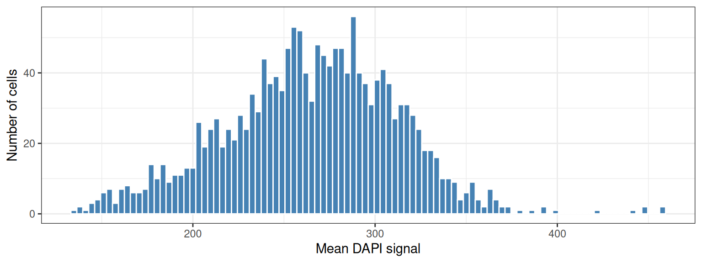
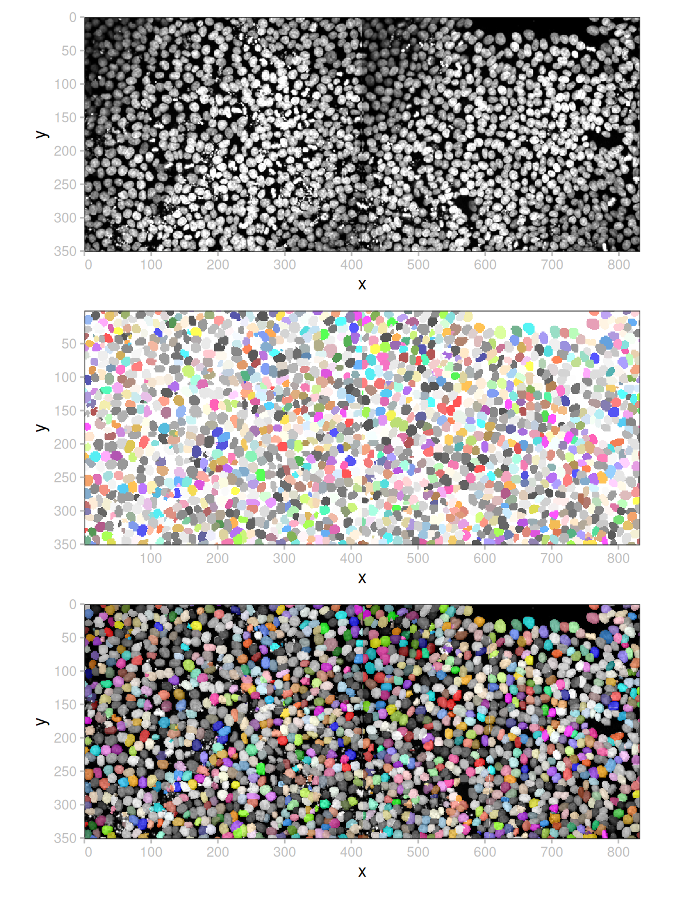
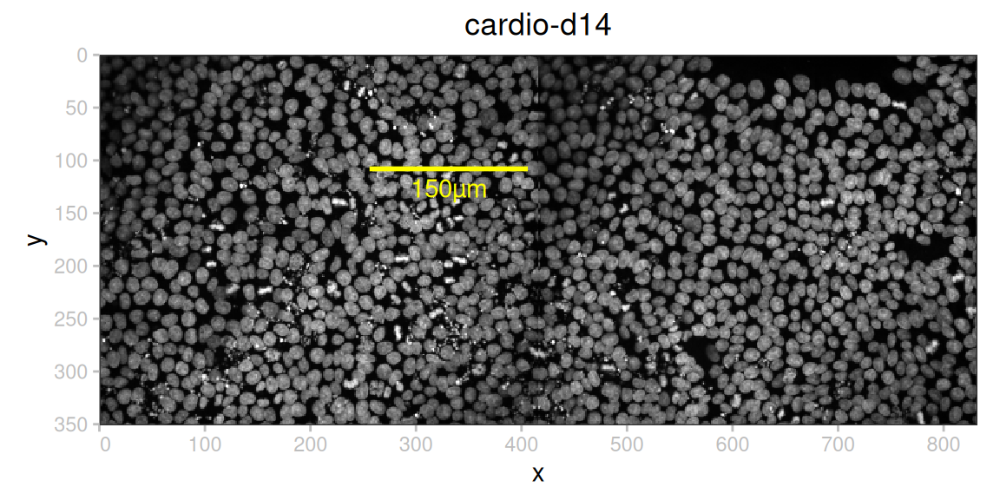
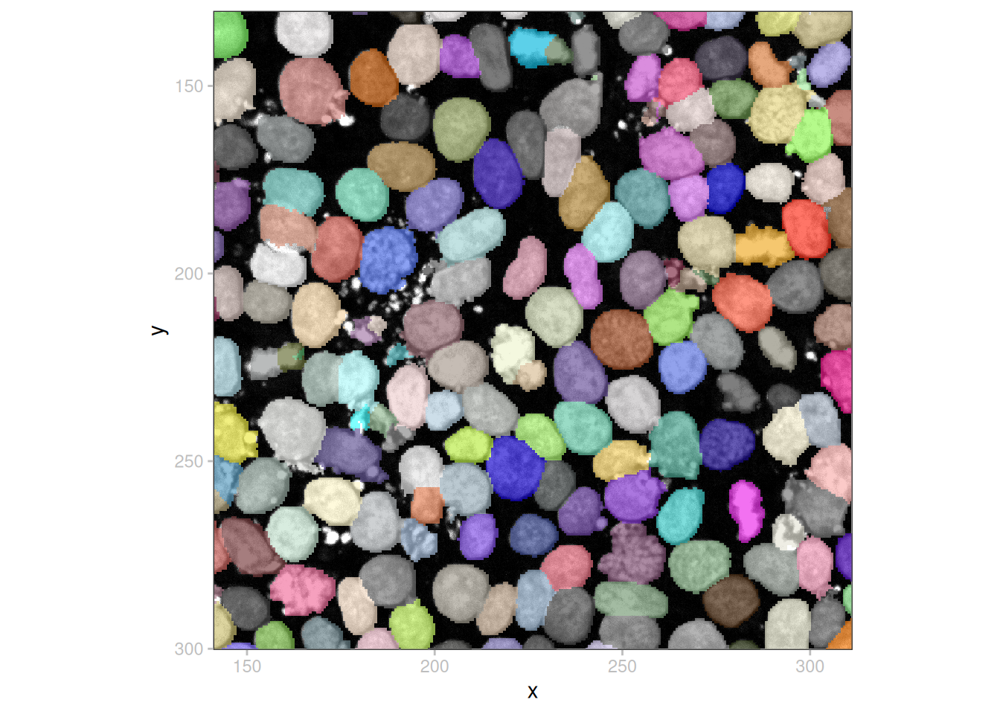
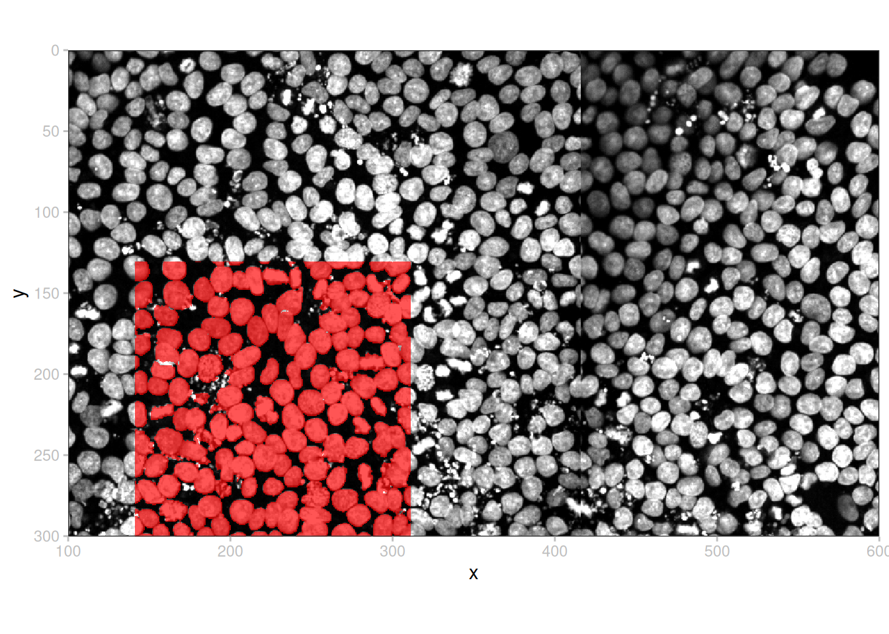
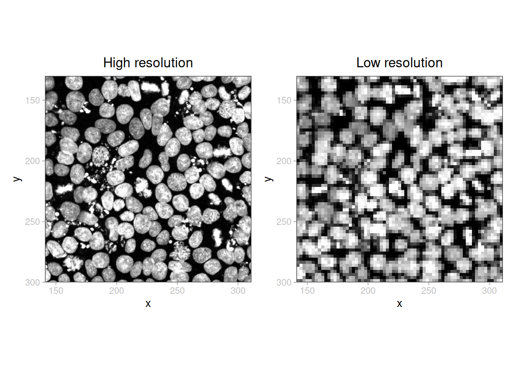
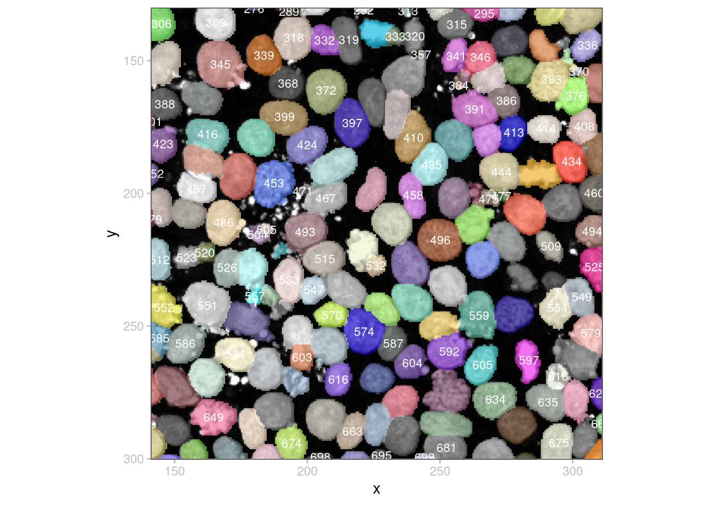
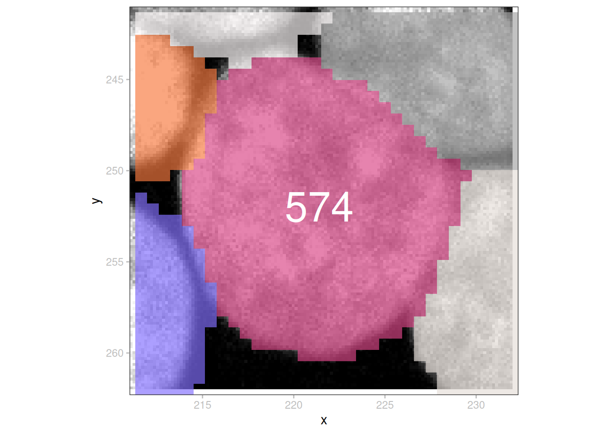
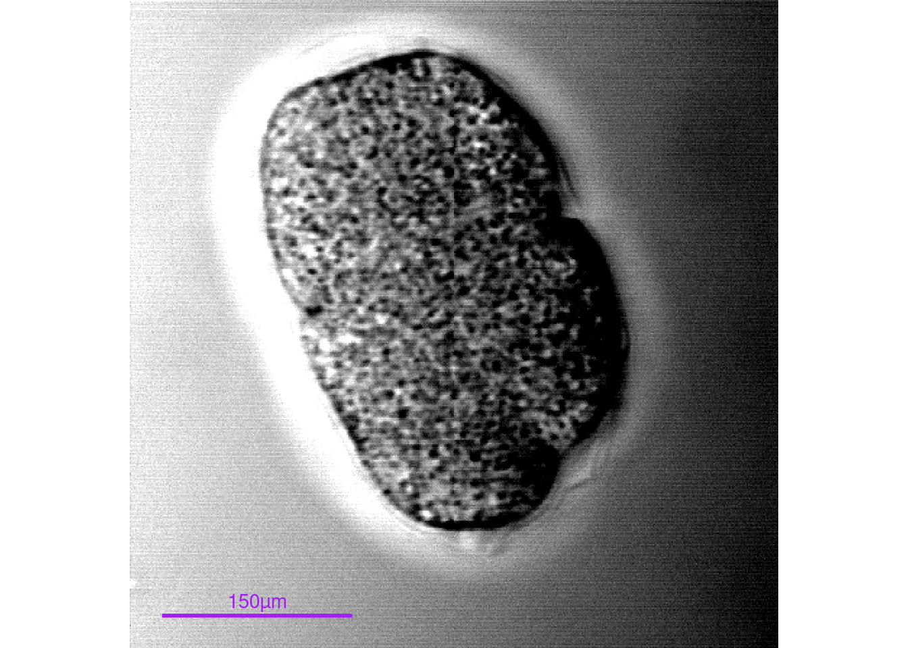

library(sf)
library(ggplot2)
library(patchwork)
library(spatialdataR)
library(SpatialData.plot)
library(SingleCellExperiment)Fractal
In this demo we will work with an example data set consisting of human induced pluripotent stem cells, imaged at 40x magnification with a Yokogawa CV7000 microscope and processed using Fractal. The dataset is available via Zenodo.
Preamble
We first download the compressed OME-Zarr file from Zenodo and expand the content.
We need to make sure the timeout used by the
download.file function, which it uses to avoid getting stuck in a forever wait, is large enough (the default is 60 seconds).# Zenodo can be a bit slow and the dataset is large so we increase the timeout
old_timeout <- options(timeout=1000)
on.exit(options(old_timeout))url <- sprintf(
"https://zenodo.org/records/10519143/files/%s.zip?download=1",
fnm <- "20200812-CardiomyocyteDifferentiation14-Cycle1.zarr")
# retrieve:
# - cached copy (from previous download) if available and md5sum matches
# - from zenodo otherwise
zip <- file.path(tools::R_user_dir("SpatialData.demo", "cache"), paste0(fnm, ".zip"))
dir.create(dirname(zip), recursive=TRUE, showWarnings=FALSE)
if (!file.exists(zip) || tools::md5sum(zip) != "0caf026b7ca264782c016c7c3bbd9cf9" ) {
download.file(url, zip, quiet=TRUE, mode="wb")
}
# decompress
unzip(zip, exdir=tempdir())
zs <- file.path(tempdir(), fnm)
cat(basename(zs))20200812-CardiomyocyteDifferentiation14-Cycle1.zarrNext, we construct the SpatialData object from the OME-Zarr file. Note that the folder structure is slightly different from what is expected by readSpatialData(), and hence we read the image and labels using the respective import functions, and create the SpatialData object manually. In addition, we calculate the average channel intensity per cell, and add a column with cell IDs.
# read in image & label
iz <- file.path(zs, "B/03/0")
lz <- file.path(iz, "labels/nuclei")
(i <- addCT(readImage(iz), name="global"))class: SpatialDataImage (MultiScale)
Scales (5): (1,2,2160,5120 1,2,1080,2560 1,2,540,1280 1,2,270,640
1,2,135,320)(l <- addCT(readLabel(lz), name="global"))class: SpatialDataLabel (MultiScale)
Scales (5): (2,540,1280 2,270,640 2,135,320 2,67,160 2,33,80)# construct SD object
sd <- SpatialData(
images=list(image=i),
labels=list(cells=l)
)
# average channel intensities by cell
sd <- mask(sd, "image", "cells", how="mean")
# cell IDs
table(sd)$id <- seq(ncol(table(sd)))
sdclass: SpatialData
- images(1):
- image (1,2,2160,5120)
- labels(1):
- cells (2,540,1280)
- points(0):
- shapes(0):
- tables(1):
- image_by_cells (1,1632) [cells]
coordinate systems(1):
- global(2): image cellsExplore SpatialData object
# channels
channels(image(sd, 1))[1] "DAPI"# metadata for image
meta(image(sd, 1))class: SpatialDataAttrs
axes(4):
- name: c z y x
- type: channel space space space
coordTrans(1):
- global: (identity)
datasets(5): 0 1 2 3 4
- 0: (scale:[1,1,0.1625,0.1625])
- 1: (scale:[1,1,0.325,0.325])
- 2: (scale:[1,1,0.65,0.65])
- 3: (scale:[1,1,1.3,1.3])
- 4: (scale:[1,1,2.6,2.6])
channels(1): DAPI# metadata for labels
meta(label(sd, "cells"))class: SpatialDataAttrs
axes(3):
- name: z y x
- type: space space space
coordTrans(1):
- global: (identity)
datasets(5): 0 1 2 3 4
- 0: (scale:[1,0.65,0.65])
- 1: (scale:[1,1.3,1.3])
- 2: (scale:[1,2.6,2.6])
- 3: (scale:[1,5.2,5.2])
- 4: (scale:[1,10.4,10.4])# table
table(sd, "image_by_cells")class: SingleCellExperiment
dim: 1 1632
metadata(0):
assays(1): mean
rownames(1): DAPI
rowData names(0):
colnames(1632): 1 2 ... 1631 1632
colData names(1): id
reducedDimNames(0):
mainExpName: NULL
altExpNames(0):# dimensions
image(sd, "image") |> data(NULL) |> sapply(dim) [,1] [,2] [,3] [,4] [,5]
[1,] 1 1 1 1 1
[2,] 2 2 2 2 2
[3,] 2160 1080 540 270 135
[4,] 5120 2560 1280 640 320label(sd, "cells") |> data(NULL) |> sapply(dim) [,1] [,2] [,3] [,4] [,5]
[1,] 2 2 2 2 2
[2,] 540 270 135 67 33
[3,] 1280 640 320 160 80Plot distribution of mean channel intensities per cell
The mean channel intensity per cell was calculated above and is stored in the mean assay of the image_by_cells table in sd.
mx <- assay(table(sd, "image_by_cells"))
df <- data.frame(meanDAPI=mx[1, ])
ggplot(df, aes(x=meanDAPI)) +
geom_histogram(bins=100, fill="steelblue", col="white") +
labs(x="Mean DAPI signal", y="Number of cells") +
theme_bw()
Plot full image
# sample colors
pal <- sample(colors(), ncol(table(sd)), replace=TRUE)
# only image
a <- plotSpatialData(sd, ct="global") +
plotImage()
# only labels
b <- plotSpatialData(sd, ct="global") +
plotLabel(c="id", pal=pal, a=2/3) +
theme(legend.position="none")
# image + labels
c <- plotSpatialData(sd, ct="global") +
plotImage() +
plotLabel(c="id", pal=pal, a=2/3) +
theme(legend.position="none")
wrap_plots(a, b, c, ncol=1)
Add a scale bar and a plot title, and set contrast limits
# values are uint16 - scale contrast limits by maximum value (2^16-1)
plotSpatialData(sd) +
plotImage(cl=list(c(100, 600)/65535)) +
scalebar(len=150, col="yellow", xrel=0.05, yrel=0.95) +
labs(title="cardio-d14")
Zoom in
It is often useful to zoom in to predefined regions of interest in an image. With this in mind, we first define two bounding boxes (a ‘large’ one and a ‘small’ one), and crop both the image and labels to each of the bounding boxes.
bbLarge <- list(xmin=100, xmax=600, ymin=0, ymax=300)
image(sd, "image_bbLarge") <- crop(image(sd, "image"), y=bbLarge)
label(sd, "cells_bbLarge") <- crop(label(sd, "cells"), y=bbLarge)
bbSmall <- list(xmin=141, xmax=311, ymin=130, ymax=300)
image(sd, "image_bbSmall") <- crop(image(sd, "image"), y=bbSmall)
label(sd, "cells_bbSmall") <- crop(label(sd, "cells"), y=bbSmall)
sd <- mask(sd, "image_bbSmall", "cells_bbSmall", how="mean")
table(sd, 2)$id <- seq(ncol(table(sd, 2)))We can visualize the image with overlaid labels cropped to the same bounding box.
plotSpatialData(sd) +
plotImage(i="image_bbSmall") +
plotLabel(i="cells_bbSmall", c="id", pal=pal, a=2/3) +
theme(legend.position="none")
We can also use different bounding boxes for the image and labels.
plotSpatialData(sd) +
plotImage(i="image_bbLarge") +
plotLabel(i="cells_bbSmall", pal="red", a=2/3)
Use a lower resolution
We can plot a lower-resolution pyramid level by setting the k argument to plotImage().
a <- plotSpatialData(sd) +
plotImage(i="image_bbSmall", k=1) +
labs(title="High resolution")
b <- plotSpatialData(sd) +
plotImage(i="image_bbSmall", k=5) +
labs(title="Low resolution")
wrap_plots(a, b, nrow=1)
Add label IDs
# extract data.frame of cell centroids to label cell IDs
# (alternative labels could be used, e.g., from the table)
xy <- centroids(label(sd, "cells_bbSmall"))
# random subset for demonstration purposes
.xy <- xy[sample(nrow(xy), 99), ]
plotSpatialData(sd) +
plotImage(i="image_bbSmall", k=1) +
plotLabel(i="cells_bbSmall", c="id", pal=pal, a=2/3) +
geom_text(aes(x, y, label=i), data=.xy, color="white", size=3) +
theme(legend.position="none")
Zoom in to a specific object
# square expansion around cell of interest
ci <- xy[xy$i == "574", ]
pt <- st_as_sf(ci, coords=c("x", "y"))
bb <- st_bbox(st_buffer(pt, dist=10))
sp <- crop(sd, bb)
plotSpatialData(sp) +
plotImage() +
plotLabel(c="id", pal=pal, a=2/3) +
geom_text(aes(x, y, label=i), data=ci, color="white", size=12) +
theme(legend.position="none")
Visualize image with time axis
To illustrate how to work with an image with a time dimension, we download another example data set, showing a tubulin histone GFP coexpressing C. elegans embryo. The original data set was acquired on a multiphoton workstation by Josh Bembenek, and is freely available from openmicroscopy.org. The data set used here (provided as an example data in the ez-zarr package) is a subset of the original image (2 timepoints, 1 channel, 2 z-planes). In addition, a manual segmentation label was added for illustration purposes.
url <- "https://github.com/fmicompbio/ez_zarr/archive/refs/heads/main.zip"
# retrieve
zip <- tempfile(fileext=".zip")
download.file(url, zip, quiet=TRUE)
# decompress
unzip(zip, exdir=dirname(zip))
zst <- file.path(dirname(zip), "ez_zarr-main")
cat(basename(zst))ez_zarr-main# read in image & label
iz <- file.path(zst, "tests", "example_data_5d", "tubhiswt4D_sub.zarr")
lz <- file.path(iz, "labels", "embryo")
(i <- addCT(readImage(iz), name="global"))class: SpatialDataImage (MultiScale)
Scales (3): (3,1,2,512,512 3,1,2,256,256 3,1,2,128,128)(l <- addCT(readLabel(lz), name="global"))class: SpatialDataLabel (MultiScale)
Scales (3): (3,2,512,512 3,2,256,256 3,2,128,128)# construct SD object
sdt <- SpatialData(
images=list(image=i),
labels=list(embryo=l))
# for each timepoint, average channel intensities by cell
sdt <- mask(sdt, "image", "embryo", how="mean")
# embryo IDs
table(sdt)$id <- seq(ncol(table(sdt)))
(se <- table(sdt))class: SingleCellExperiment
dim: 1 1
metadata(0):
assays(3): mean_t1 mean_t2 mean_t3
rownames(1): channel_0
rowData names(0):
colnames(1): 1
colData names(1): id
reducedDimNames(0):
mainExpName: NULL
altExpNames(0):sapply(assays(se), as.vector) mean_t1 mean_t2 mean_t3
79.74909 79.15560 79.27512 plotSpatialData(sdt) +
plotImage(i="image", t=1) +
scalebar(len=150, col="purple") +
theme_void() + theme(legend.position="none")
Alternatively, we can loop through timepoints and generate an animation (.gif) using magick; briefly, we write each plot to .png, read as a magick-image, write a .gif, and display it using R Markdown syntax  (not shown):
# plot each timepoint
ts <- seq_len(dim(image(sdt))[1])
ps <- lapply(ts, \(t) {
plotSpatialData(sdt) +
plotImage(i="image", t=t) +
annotate("text",
x=Inf, y=Inf, hjust=1.2, vjust=-0.8,
label=paste("t =", t), size=5, col="yellow") +
scalebar(len=150, col="purple") +
theme_void() + theme(legend.position="none")
})
# get 'magick-image's
library(magick)
is <- lapply(ps, \(p) {
png <- tempfile(fileext=".png")
ggsave(png, p, width=6, height=6)
image_read(png)
})
# animate & write to .gif
vid <- image_animate(image_join(is), fps=2)
image_write(vid, gif <- "timeloop.gif")
Appendix
NoteSession
sessionInfo()R version 4.6.1 (2026-06-24)
Platform: x86_64-pc-linux-gnu
Running under: Ubuntu 24.04.5 LTS
Matrix products: default
BLAS: /usr/lib/x86_64-linux-gnu/openblas-pthread/libblas.so.3
LAPACK: /usr/lib/x86_64-linux-gnu/openblas-pthread/libopenblasp-r0.3.26.so; LAPACK version 3.12.0
locale:
[1] LC_CTYPE=C.UTF-8 LC_NUMERIC=C LC_TIME=C.UTF-8
[4] LC_COLLATE=C.UTF-8 LC_MONETARY=C.UTF-8 LC_MESSAGES=C.UTF-8
[7] LC_PAPER=C.UTF-8 LC_NAME=C LC_ADDRESS=C
[10] LC_TELEPHONE=C LC_MEASUREMENT=C.UTF-8 LC_IDENTIFICATION=C
time zone: UTC
tzcode source: system (glibc)
attached base packages:
[1] stats4 stats graphics grDevices datasets utils methods
[8] base
other attached packages:
[1] magick_2.9.1 SingleCellExperiment_1.35.2
[3] SummarizedExperiment_1.43.0 Biobase_2.73.2
[5] GenomicRanges_1.65.4 Seqinfo_1.3.2
[7] IRanges_2.47.5 S4Vectors_0.51.10
[9] BiocGenerics_0.59.12 generics_0.1.4
[11] MatrixGenerics_1.25.0 matrixStats_1.5.0
[13] SpatialData.plot_0.99.9 spatialdataR_0.99.44
[15] patchwork_1.3.2 ggplot2_4.0.3
[17] sf_1.1-3
loaded via a namespace (and not attached):
[1] tidyselect_1.2.1 grumpy_0.1.1 dplyr_1.2.1
[4] farver_2.1.2 blob_1.3.0 R.utils_2.13.0
[7] S7_0.2.2 fastmap_1.2.0 duckdb_1.5.6.9002
[10] digest_0.6.39 lifecycle_1.0.5 paws.storage_0.11.0
[13] magrittr_2.0.5 compiler_4.6.1 rlang_1.3.0
[16] tools_4.6.1 yaml_2.3.12 knitr_1.52
[19] S4Arrays_1.13.2 labeling_0.4.3 htmlwidgets_1.6.4
[22] classInt_0.4-11 curl_8.0.0 reticulate_1.47.0
[25] DelayedArray_0.39.8 RColorBrewer_1.1-3 abind_1.4-8
[28] KernSmooth_2.23-27 withr_3.0.3 purrr_1.2.2
[31] R.oo_1.27.1 grid_4.6.1 e1071_1.7-17
[34] scales_1.4.0 cli_3.6.6 rmarkdown_2.32
[37] DBI_1.3.0 proxy_0.4-29 BiocManager_1.30.27
[40] XVector_0.53.0 vctrs_0.7.3 Matrix_1.7-6
[43] jsonlite_2.0.0 RBGL_1.89.0 ggnewscale_0.5.2
[46] units_1.0-1 glue_1.8.1 ZarrArray_1.1.7
[49] gtable_0.3.6 Rarr_2.1.44 tibble_3.3.1
[52] pillar_1.11.1 htmltools_0.5.9 graph_1.91.0
[55] R6_2.6.1 dbplyr_2.6.0 httr2_1.3.0
[58] wk_0.9.5 evaluate_1.0.5 lattice_0.23-1
[61] R.methodsS3_1.8.2 png_0.1-9 duckspatial_1.2.1
[64] renv_1.3.1 paws.common_0.9.0 class_7.3-24
[67] Rcpp_1.1.2 SparseArray_1.13.4 anndataR_1.3.2
[70] xfun_0.61 pkgconfig_2.0.3